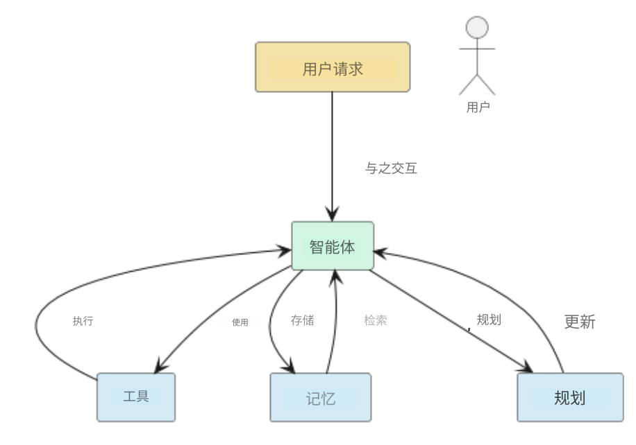

13 / 23 · 中文翻译
第 13 章 从工具到助手：现实世界的应用
本章目录
13.1 作为助手的智能体式大语言模型
大语言模型已从文本生成器发展为主动助手，结合推理、检索与工具使用，在现实世界执行行动。助手是智能体式大语言模型的实用软件形态：能够交互、规划并从反馈中学习的系统。助手让推理与现实相遇，将语言模型变成世界中的协作行动者。
助手连接感知、推理与行动。通过 API 和外部工具，它可以对话、执行任务，并适应特定上下文。这些系统不仅支持用户，也创造有价值的人类—人工智能交互数据，可用于进一步开发和训练下一代模型。
本章回顾助手的主要类型。先介绍对话系统及其向多模态、工具感知界面的演进；再讨论医疗、金融与交易领域的专用助手；最后考察用于推理与发现的科学助手。
13.2 对话助手
第一个应用领域是一般对话场景，例如通过记录会议纪要帮助开会，担任会议主持人或通用行政助理。
这类应用中，大语言模型主要让人机交互更自然、更顺畅 [Neszlényi et al., 2024, Oluwagbade, 2024]。例如 AssistantGPT 系统 [Neszlényi et al., 2024] 是为教育或企业环境部署而设计的通用行政助理，还支持 Teams、Slack 等远程工作环境。AssistantGPT 支持网页搜索、通过 OpenAPI 与 API 交互、语音对话和通过 shell 执行命令等多种操作。系统由一个可访问规划器、记忆等多种工具的大语言模型组成（见图 13.1）。

研究表明，这些对话与会议助手可改善敏捷软件开发团队的会议 [Cabrero-Daniel et al., 2024]。在 Scrum 会议准备与现场协助方面取得了积极结果，但部分测试者认为模型的干预不自然、缺乏灵活性。
其他例子包括协作学习课堂中的大语言模型智能体，它们改善了参与者整体协作 [Wei et al., 2024b]。另一项研究 [Bastola et al., 2023] 报告，在包含对话助手的协作任务调度实验中，工作效率得到提高。
稍有不同的是思考助手。它通过提问而非回答，尝试改善人类面对困难决策时的反思性思考 [Park and Kulkarni, 2023]。大型模型厂商近期也推出类似举措，例如 OpenAI 的 ChatGPT 和 Google 的 Gemini 应用中的学习模式。
对话助手大多从常规预训练大语言模型演化而来，有时针对特定领域微调。某些方法采用专门的多模型方案，让不同模型专注不同子任务，或用侧重不同子任务的提示序列编排单一模型。
13.3 购物助手
本节考察基于语言的助手如何用于电子商务，重点介绍该领域的主要组件、架构选择与专属挑战。
购物助手做什么？
购物助手是基于大语言模型的对话系统，帮助用户完成网上购物任务，包括理解商品需求、比较选项、推荐商品和完成购买。这类系统通常以领域专用模块补充底层模型，包括检索最新商品信息、通过 API 访问商品目录、集成推荐引擎，以及对用户需求、属性和约束进行推理（例如通过思维链）。
关键要素
通用大语言模型缺少对品牌、类别、商品层级、购买行为等电商概念的内置感知，因此构建有能力的助手需要若干增强：
- •
检索增强：从外部来源动态获取商品元数据、价格和库存情况。
- •
工具／API 调用：助手可调用搜索、筛选和排序工具，与商品数据库交互。
- •
领域微调或指令调优：让模型适应购物场景，包括品牌语言、属性推理和用户意图。
- •
结构化推理：加入思维链提示或显式推理步骤，帮助模型比较商品、评估价格与功能等权衡，并与用户偏好对齐。
购物助手的基准评测
研究者开发了基准，以研究模型处理购物专属任务的能力。例如，多任务在线购物基准数据集 ShopMMLU [Jin et al., 2024] 定义了 57 项任务，归为概念理解、知识推理、用户行为对齐和多语言能力四类。它使用真实电商数据（Amazon 商品目录、会话和评论），评估模型处理品牌型号识别、商品兼容性推理、基于会话的推荐及多语言查询等方面的能力。另一个例子是 LLaSA 系统（大语言与电商购物助手）[Zhang et al., 2024a]，使用名为 EshopInstruct 的指令数据集（65,000 个样本）训练。在购物任务上指令调优后，LLaSA 在 ShopBench 基准上取得强劲成绩，说明领域适应能显著提高性能。
实践建议
构建购物助手时，以下原则很重要：
- •
有能力的助手应融合自然语言理解与领域推理。它应理解“低于 200 欧元、续航 ¿ 20 小时的降噪耳机”意味着什么，并将其转成商品属性与用户约束。 〔译注：此处“¿ 20 h”来自原始 HTML，符号疑似排版异常，未擅自改动。〕
- •
领域专用数据很重要：现成模型在一定程度上有效，但针对购物任务的微调或指令调优可显著提升性能。LLaSA [Zhang et al., 2024a] 在实践中展示了这一点。
- •
评估必须反映领域特点。相较于理解商品属性或生成查询的准确率，助手能否对齐用户行为、处理多步会话并支持多语言用户更为重要。
- •
工具与检索集成很重要。助手必须充当商品系统的接口，这会引入额外复杂性，包括 API 设计、延迟、数据新鲜度及集成错误处理。
- •
考虑伦理与信任。购物推荐涉及商业、隐私和偏差问题。在生产部署前，应评估展示哪些品牌、用户历史是否被正确处理、推理是否透明等问题。
挑战与开放问题
尽管近期有所进展，购物助手仍面临若干重要挑战。第一，大语言模型智能体仍难以处理浏览、细化查询、切换意图等长交互轨迹。第二，实时更新商品知识（新型号、价格变化、库存）仍是主要工程痛点。第三，基于模型的助手在向用户解释推荐理由（为什么选择此商品而非另一个）方面研究不足。最后，跨语言行为与多语言商品查询增加了复杂性，因为购物场景跨越语言和地区。
13.4 航空运行助手
基于语言的助手也用于航空运行，这一领域超越消费者预订，进入规划与决策支持。
预订与旅行规划
较简单的应用是对话式预订助手，与上一节购物助手类似。例如，Manasa et al. [2024] 提出基于 LLaMa 2 和 RAG 的系统，交互式帮助用户预订航班。助手在航班预订数据上微调，并通过检索连接最新航班信息。用户测试对其捕捉偏好、有效引导预订流程的能力给予较高评价。
注意，这一用例的运行复杂性仍相对较浅。助手处理结构化用户意图（我想在日期 D 从 A 飞到 B）、检索最新产品数据、询问偏好并生成回应。它尚未深入处理动态空中交通约束或安全裕度等问题。
运行决策支持
在要求更高的场景中，研究者开始提出用于实际航空运行的大语言模型助手。这里讨论两个例子。
在 Zhou et al. [2024] 的研究中，进场时隙分配问题（即确定进场飞机着陆顺序）被表述为语言建模任务。作者将调度输入和输出编码为词元，微调模型以生成无冲突着陆序列。实验表明，即使对传统方法难以应对的机场，该模型也能降低冲突率和总延误时间。
另一项运行问题是在环境危险下规划。Tabrizian et al. [2024] 使用思维链支持风害约束下的航路或飞行计划生成。此时助手的任务不再只是预订航班，而必须对风、航路、飞机性能等约束进行推理，提出运行上可行的计划。
关键建议
这些研究展示了大语言模型智能体系统的几个重要方面：
- •
工具与后端集成：运行助手中的模型不仅需要对话，还必须对接航班数据库、气象信息流、航路引擎和时隙分配系统，因此需要实现工具调用、检索流水线和决策逻辑。
- •
约束下推理：这些助手必须处理组合约束或调度约束，生成计划，并应对天气、跑道可用性等实时不确定性。进场时隙是一个好例子，模型必须对动态排序进行推理。
- •
领域专用数据与微调：标准预训练模型缺少航空运行先验。上述系统经过领域专用微调或提示设计。必须具备领域任务、提示、预期输出的数据集，以及针对领域定制的评估指标。
- •
从对话智能体到自主规划器：预订助手仍由用户驱动，即用户提出需求、助手提供帮助；运行助手则日益承担规划角色。它应能处理“这里是约束，请提出时间表或航路”等请求。这一转变带来信任、验证和可解释性问题。
- •
真实情境评估：运行系统的评估往往不只考察助手是否回答用户，还需衡量冲突率、延误时间和序列效率等。例如，进场时隙模型研究衡量了总延误和冲突率。
13.5 医疗助手
医疗是大语言模型助手最活跃的应用领域之一 [Thirunavukarasu et al., 2023, Clusmann et al., 2023, Mehandru et al., 2024]。近期研究报告，模型在诊断任务上可超过受过训练的医生 [Goh et al., 2024]，在临床记录生成方面超过人类医疗记录员 [Yuan et al., 2024]。其他评估确认了这些优势，同时也发现特定临床场景下的系统性弱点 [Panagoulias et al., 2024]。
智能体架构越来越多地用于满足监管、伦理与可用性要求。Sudarshan et al. [2024] 提出一种智能体工作流，生成符合《21 世纪治愈法案》、方便患者理解的医疗报告。其系统利用 reflexion（第 6.2.4 节，[Shinn et al., 2024]），在向患者发布信息前迭代改进清晰度和正确性。
其他研究探索将模型智能体用于更广泛的临床支持。Qiu et al. [2024] 指出从临床工作流自动化到多智能体诊断支持等应用，但准确性、完整性和幻觉仍令人担忧。Ullah et al. [2024] 的范围综述强调，训练和微调这些系统时，医疗领域知识与伦理约束至关重要。
为缓解常见失败模式，Das et al. [2024] 提出基于检索的智能体架构，让大语言模型担任规划器。智能体协调专用工具，从可信医疗来源检索并综合证据，减少幻觉和“中间信息丢失”错误。
高风险应用领域
医疗是高风险应用领域，错误或有偏输出可能直接影响患者安全。因此，医疗人工智能系统受到严格监管框架约束，包括将许多医疗人工智能用途归为高风险的欧盟《人工智能法案》。无论临床实践还是医疗大语言模型学术研究，透明性、公平性和问责都居于核心地位。这些关切推动人们关注超越事后解释、在更深层理解模型行为的方法。我们将在机制可解释性一章（第 21 章）回到这一主题，讨论分析和控制模型内部表示的技术。
医学教育
在医学教育中，智能体系统用于模拟真实训练环境。Wei et al. [2024a] 引入多智能体协作助手，支持基于案例的学习和临床推理练习（图 13.2）。Qiao et al. [2024] 为医疗检索增强生成的系统评估提供了专门基准。

13.6 交易助手
另一个专门领域是金融交易。金融机构已经使用许多非大语言模型算法作交易决策。金融界对智能体式大语言模型兴趣浓厚 [Ding et al., 2024]。
InvestorBench 是金融交易系统基准 [Li et al., 2024]。FinAgent 是用于金融交易、由工具增强的多模态智能体 [Zhang et al., 2024b]。它包含市场情报模块，能从资产价格、视觉表示、新闻和专家分析等多模态数据集中提取见解。系统还可执行查询检索，并在低层模块进行技术分析反思，在高层模块分析过去交易决策。
FinRobot 是用于金融分析、帮助人类交易者的智能体式大语言模型 [Yang et al., 2024a]。它能分析和生成文档，并预测个股市场。FinMem 是为金融决策设计的智能体式大语言模型框架 [Yu et al., 2024]，具有分层记忆系统和可调节的交易智能体性格设计。FinMem 受到 Park et al. [2023] 的生成式智能体框架启发（见第 17.2.1 节及案例研究 4）。
迄今大多数金融市场机器学习集中于单智能体系统。TradingAgents 方法用多智能体系统复现现实交易公司的协作动态 [Xiao et al., 2024]，模拟由大语言模型驱动的专业角色，包括基本面分析师、情绪分析师、技术分析师以及不同风险偏好的交易员。系统向人类经理输出买入或卖出建议。模拟显示它超过了基线模型。
评估
金融交易是具有挑战性的研究领域。其竞争利益重大，人们自然倾向于将有力研究发现保密，这与科学研究的开放透明原则形成张力。
此外，尽管该领域有丰富的数值数据，在相同数据上比较不同智能体式大语言模型方法的基准研究仍较少。一项近期基准研究发现，某些金融大语言模型研究存在方法缺陷，例如选择市场上涨的短评估期，或测试数据泄漏到训练数据中 [Li et al., 2026]。
13.7 自动化科学发现
在某些科学领域，科学实验工作流相对标准化。例如机器学习中：（1）产生想法，（2）提出假设，（3）设计实验，（4）获取数据集，（5）执行实验，（6）解释结果，（7）形成报告。这种标准工作流吸引研究者尝试使用智能体式大语言模型开展科学研究，综述见 Eger et al. [2025]。
Google 和 OpenAI 都发布了 Deep Research 智能体。它们可执行综合在线信息等多步研究任务，基于推理大语言模型构建，并利用检索增强寻找信息来源。系统能够生成看起来很出色的科学研究论文，但往往并非没有错误。
AI Scientist [Lu et al., 2024] 是自动化科学发现过程的框架，涵盖从想法生成到论文写作及评审。用户必须指定主题、提供实验模板并指出数据集。作者报告了扩散建模、基于 Transformer 的语言建模、学习动力学这三个机器学习领域的实验，结果具有前景。为改善想法生成与评审，智能体访问开放来源。目前局限包括实验有限、想法实现不正确，以及论文生成中的视觉错误。另一方面，整套结果被凭空捏造的情况很少。不过，建议将 AI Scientist 的结果视为有前景思路的线索，值得后续研究 [Lu et al., 2024]。
在 AI Scientist 思想基础上，研究者提出 Agent Laboratory [Schmidgall et al., 2025]，这是采用专门大语言模型智能体、加速完整研究周期的开源框架。与 AI Scientist 不同，它明确设计为人类研究者的协作助手，补充而非取代人类构思。框架分为文献综述、实验和报告写作三个主要阶段，各阶段由博士生、博士后、教授等专门智能体执行，通过结构化流水线协调。系统集成两个专用组件：mle-solver 自主生成、测试和改进机器学习代码；paper-solver 根据实验结果生成完整 LaTeX 研究报告。二者均用迭代改进、自我评估和基于奖励的评分，在各轮中改善代码与报告质量。
评估表明，Agent Laboratory 能以同类系统一小部分计算成本，自主生成包含可执行代码和可发表报告的完整研究项目（使用 gpt-4o 后端，每篇论文约 2.33 美元）。人在环路或协作助手模式进一步改善研究质量和可用性，参与者报告高度满意，并愿意继续使用。不过人类监督仍不可或缺，因为自动自评通常比人类评审者高估研究质量。
13.8 编程助手与总体进展
SWE-Agent（软件工程智能体的缩写）[Yang et al., 2024b] 旨在自动化软件发现过程，帮助智能体自主使用计算机解决软件工程任务。它引入创建和编辑代码文件、浏览软件仓库、执行程序等工具。在 HumanEvalFix 等编程基准中，实验成功率超过 80%。这一成功归因于智能体的交互式设计（见图 13.3）。
MLGym [Nathani et al., 2025] 遵循常用的 Gym 强化学习框架 [Brockman et al., 2016]。Gym 为环境与智能体提供标准接口，2016 年推出后加速了强化学习算法开发，促进领域进步。MLGym 进一步借鉴 SWE-agent 的文件编辑等能力，展示如何将科学发现建模为交互过程。讨论的应用领域从数据科学、博弈论、计算机视觉、强化学习，到自然语言处理。研究报告了使用 OpenAI、Meta、Google、Anthropic 等商业大语言模型的实验。
包括研究和编程助手在内，大多数大语言模型助手依赖预定义工具，限制了自主性和可扩展性。Toolmaker [Wölflein et al., 2025] 让智能体直接从科学论文及代码仓库创建新工具，解决这一局限。给定任务描述与 GitHub URL，它安装依赖、配置可复现 Docker 环境，并通过迭代自纠正与错误诊断实现可用 Python 工具。系统在 TM-Bench（也由 Wölflein et al. [2025] 提出）上评估，该基准包含医疗、生物和人工智能领域 15 项真实科学任务。Toolmaker 达到 80% 任务成功率。其闭环设计让智能体不仅使用工具，还能自主构建新工具，向自扩展研究助手和自适应科学工作流迈进。
Agent Laboratory、Toolmaker 等关注单个智能体能力，而 The Agent Company [Xu et al., 2024] 提供综合基准，评估模型智能体在逼真工作环境中的表现。它模拟一家小型软件公司，让智能体使用浏览器、终端、通信平台等标准数字工具，完成软件开发、项目管理、财务、人力资源等专业任务。
基准包含 175 项任务，测试多步推理、工具使用及与模型驱动的模拟同事协作。每项任务分为检查点，衡量完整和部分完成度。针对 GPT-4o、Claude、Gemini、Llama 等十二个基础模型的实验表明，即使当前最强系统也只能自主完成约 30% 的任务。失败往往源于交流、长程规划和复杂用户界面导航的弱点。
The Agent Company 引入可复现、自托管、映射现代工作场所的环境，为评估智能体式大语言模型成熟度提供关键压力测试。它同时突出当前系统的迅速进步与持续局限，强调数字工作自动化虽已触手可及，真正自主协作仍是重要研究前沿。
13.9 结语
本章展示智能体式大语言模型如何作为助手与真实世界互动。助手从被动问答走向对话、航空运行、医疗、教育、科学研究等领域的主动协作。它们规划、检索信息、调用工具、反思结果，并随时间调整行为。因此，智能体式大语言模型使语言模型从孤立推理引擎转为更广泛社会技术系统中的参与者。
领域敏感性与风险
不同助手受到不同约束。医疗、航空等高风险领域要求对安全性、稳健性、透明性和公平性提供强保证，并受欧盟《人工智能法案》等监管框架塑造。在这些场景中，智能体设计越来越依赖检索、规划、验证与人类监督。学术研究也反映这些关切，越来越强调把评估、偏差分析和可解释性作为首要设计目标。
实践建议
构建助手时，现实依据（真实世界评估）很重要。采用让智能体检索证据、说明行动理由，并在不确定时交由人类决策的架构（人在环路）。将工具作为具有明确契约与失败模式的模块组件。记录决策、计划和中间状态，支持调试和审计。在高风险领域，建议设计平稳降级机制；智能体请求澄清或放弃作答，优于自信地犯错。
展望
智能体助手的未来，在于更紧密地集成推理、学习与控制。进步需要更丰富的认知结构、从交互中持续适应，以及更强的安全和伦理保证。这些目标直接关联可解释性和透明性进展。后续章节，尤其是机制可解释性（第 21 章），将再次讨论打开黑箱、深入理解智能体式大语言模型如何在内部表示目标、计划与决策的技术。
参考文献
- Llm-based smart reply (lsr): enhancing collaborative performance with chatgpt-mediated smart reply system (acm)(draft) llm-based smart reply (lsr): enhancing collaborative performance with chatgpt-mediated smart reply system. arXiv preprint arXiv:2306.11980. Cited by: §13.2.
- Openai gym. arXiv preprint arXiv:1606.01540. Cited by: §13.8.
- Exploring human-ai collaboration in agile: customised llm meeting assistants. In International Conference on Agile Software Development, pp. 163–178. Cited by: §13.2.
- The future landscape of large language models in medicine. Communications medicine 3 (1), pp. 141. Cited by: §13.5.
- Improved precision oncology question-answering using agentic llm. medRxiv, pp. 2024–09. Cited by: §13.5.
- Large language model agent in financial trading: a survey. arXiv preprint arXiv:2408.06361. Cited by: §13.6.
- Transforming science with large language models: a survey on ai-assisted scientific discovery, experimentation, content generation, and evaluation. arXiv preprint arXiv:2502.05151. Cited by: §13.7.
- Large language model influence on diagnostic reasoning: a randomized clinical trial. JAMA Network Open 7 (10), pp. e2440969–e2440969. Cited by: §13.5.
- Shopping mmlu: a massive multi-task online shopping benchmark for large language models. arXiv preprint arXiv:2410.20745. Cited by: §13.3.
- INVESTORBENCH: a benchmark for financial decision-making tasks with llm-based agent. arXiv preprint arXiv:2412.18174. Cited by: §13.6.
- Can llm-based financial investing strategies outperform the market in long run?. In Proceedings of the 32nd ACM SIGKDD Conference on Knowledge Discovery and Data Mining V. 1, pp. 2711–2722. Cited by: §13.6.
- The ai scientist: towards fully automated open-ended scientific discovery. arXiv preprint arXiv:2408.06292. Cited by: §13.7.
- Towards seamless air travel: developing a next-generation flight booking assistant. Journal of Electrical Systems 20 (2), pp. 2558–2567. Cited by: §13.4.
- Evaluating large language models as agents in the clinic. NPJ digital medicine 7 (1), pp. 84. Cited by: §13.5.
- MLGym: a new framework and benchmark for advancing ai research agents. arXiv preprint arXiv:2502.14499. Cited by: §13.8.
- AssistantGPT: enhancing user interaction with llm integration. In 2024 IEEE 22nd Jubilee International Symposium on Intelligent Systems and Informatics (SISY), pp. 000619–000624. Cited by: 图 13.1, 图 13.1, §13.2.
- Conversational ai as the new employee liaison: llm-powered chatbots in enhancing workplace collaboration and inclusion. Cited by: §13.2.
- Evaluating llm–generated multimodal diagnosis from medical images and symptom analysis. arXiv preprint arXiv:2402.01730. Cited by: §13.5.
- Generative agents: interactive simulacra of human behavior. In Proceedings of the 36th annual acm symposium on user interface software and technology, pp. 1–22. Cited by: §13.6.
- Thinking assistants: llm-based conversational assistants that help users think by asking rather than answering. arXiv preprint arXiv:2312.06024. Cited by: §13.2.
- Benchmarking agentic workflow generation. arXiv preprint arXiv:2410.07869. Cited by: §13.5.
- LLM-based agentic systems in medicine and healthcare. Nature Machine Intelligence, pp. 1–3. Cited by: §13.5.
- Agent laboratory: using llm agents as research assistants. arXiv preprint arXiv:2501.04227. Cited by: §13.7.
- Reflexion: language agents with verbal reinforcement learning. Advances in Neural Information Processing Systems 36. Cited by: §13.5.
- Agentic llm workflows for generating patient-friendly medical reports. arXiv preprint arXiv:2408.01112. Cited by: §13.5.
- Using large language models to automate flight planning under wind hazards. In 2024 AIAA DATC/IEEE 43rd Digital Avionics Systems Conference (DASC), pp. 1–8. Cited by: §13.4.
- Large language models in medicine. Nature medicine 29 (8), pp. 1930–1940. Cited by: §13.5.
- Challenges and barriers of using large language models (llm) such as chatgpt for diagnostic medicine with a focus on digital pathology–a recent scoping review. Diagnostic pathology 19 (1), pp. 43. Cited by: §13.5.
- Medco: medical education copilots based on a multi-agent framework. arXiv preprint arXiv:2408.12496. Cited by: 图 13.2, 图 13.2, §13.5.
- Improving collaborative learning performance based on llm virtual assistant. In 2024 13th International Conference on Educational and Information Technology (ICEIT), pp. 1–6. Cited by: §13.2.
- Llm agents making agent tools. arXiv preprint arXiv:2502.11705. Cited by: §13.8.
- TradingAgents: multi-agents llm financial trading framework. arXiv preprint arXiv:2412.20138. Cited by: §13.6.
- Theagentcompany: benchmarking llm agents on consequential real world tasks. arXiv preprint arXiv:2412.14161. Cited by: §13.8.
- FinRobot: an open-source ai agent platform for financial applications using large language models. arXiv preprint arXiv:2405.14767. Cited by: §13.6.
- Swe-agent: agent-computer interfaces enable automated software engineering. In The Thirty-eighth Annual Conference on Neural Information Processing Systems, Cited by: 图 13.3, 图 13.3, §13.8.
- FinMem: a performance-enhanced llm trading agent with layered memory and character design. In Proceedings of the AAAI Symposium Series, Vol. 3, pp. 595–597. Cited by: §13.6.
- A continued pretrained llm approach for automatic medical note generation. arXiv preprint arXiv:2403.09057. Cited by: §13.5.
- Llasa: large language and e-commerce shopping assistant. arXiv preprint arXiv:2408.02006. Cited by: 2nd item, §13.3.
- FinAgent: a multimodal foundation agent for financial trading: tool-augmented, diversified, and generalist. arXiv preprint arXiv:2402.18485. Cited by: §13.6.
- Flight arrival scheduling via large language model. Aerospace 11 (10), pp. 813. Cited by: §13.4.